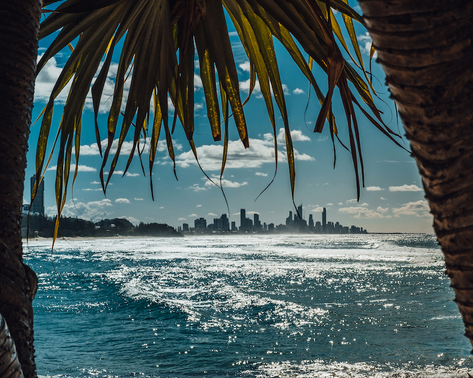

Home
Welcome! This site is going to be about something I've had the chance to do quite a bit and am quite passionate about, traveling!
A picture of me in London
About Me
In 2015 I joined the military and was lucky enough to be stationed in the United Kingdom for 3 years. During that time I made the most of my days off and was able to travel to 25 different countries. After my time in the United Kingdom, I was stationed in Albuquerque, New Mexico for 3 years. As you could imagine, it was quite a culture shock going from living in Europe for so long and transitioning to the Southwest. Nonetheless, I made the most of my time there as well. Originally from Charlotte, I seized the opportunity to explore the Southwest and the West Coast while I was there.

Best Times
Out of the 25 countries I've been to, I'd have to say that Australia was my favorite. I spent 3 weeks exploring the East coast of Australia, all the way from Sydney, to Brisbane, even up to the Great Barrier Reef. I was able to go to the Australia Zoo and hangout with kangaroos and koalas. I even had the chance to go scuba diving at the Great Barrier Reef while I was there. These are a few pictures from my time there.
{kind=link}
{kind=link}
{kind=link}

A picture of the Gold Coast in Australia
How Could I Afford It?
Unlike the United States, plane tickets in Europe are, for the most part, extremely cheap. The cheapest ticket I was able to purchase during my time in Europe was a $15 round-trip ticket from London to Paris. Often times me and my friends would simply look for the cheapest place to fly to and buy tickets for a 3 day weekend. Since they were so cheap, we could travel much more frequently and it was easier to plan spur of the moment trips. Staying in hostels was another method we used to save money. Hostels would be as cheap as 5-10 Euros per night.
A picture of the Eiffel Tower
Why You Should Too!
I've always had a passion for going new places and experiencing different cultures, so it was very exciting when I found out I would be living in the United Kingdom. Getting out and seeing the world and meeting new people is truly an exhilerating feeling. If you ever get the chance to travel to a new place, definitely take advantage of it!
A picture of the Roman Colloseum